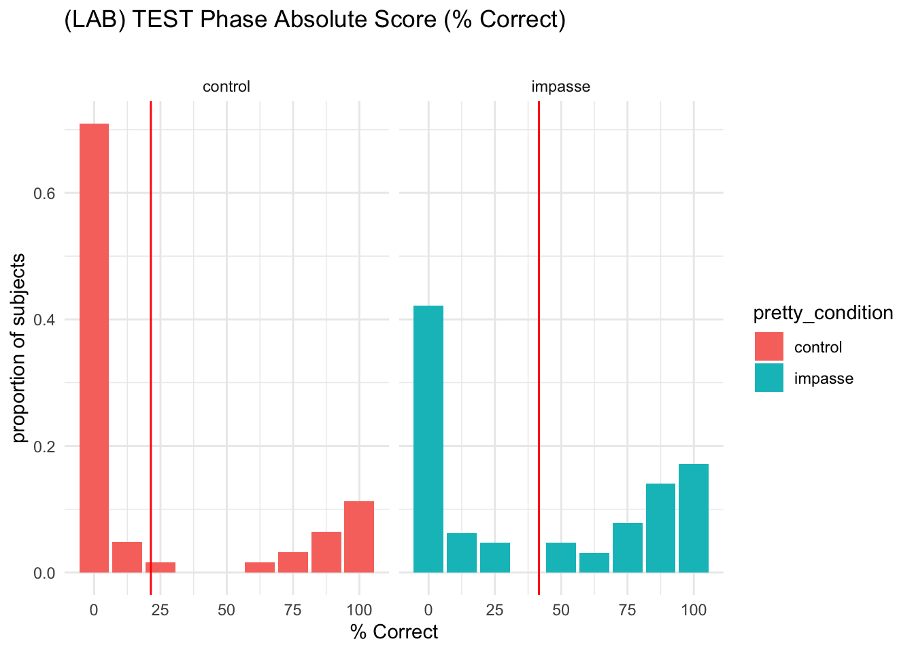
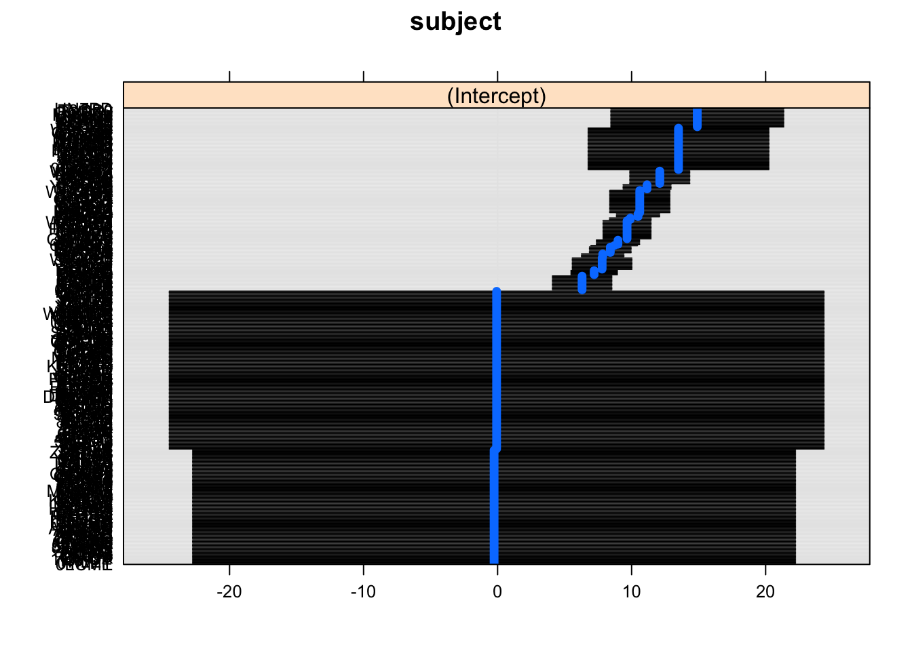

The purpose of this notebook is test the hypotheses that determined the design of the SGC3A study.
Pre-Requisite
1_sgc3A_harmonize.qmd
2_sgc3A_scoring.qmd
CODE
library(Hmisc) # %nin% operatorlibrary(ggpubr) #arrange plotslibrary(ggformula) #easy graphslibrary(report) #easystats reportinglibrary(see) #easystats visualizationlibrary(performance) #easystats model diagnosticslibrary(qqplotr) #confint on qq plotlibrary(gmodels) #contingency table and CHISQRlibrary(vcd) #mosaic plotslibrary(vcdExtra) #mosaic plotslibrary(kableExtra) #printing tables library(tidyverse) #ALL THE THINGSlibrary(equatiomatic) #extract model equation#OUTPUT OPTIONSlibrary(dplyr, warn.conflicts =FALSE)options(dplyr.summarise.inform =FALSE)options(ggplot2.summarise.inform =FALSE)options(scipen=1, digits=3)# Custom ggplot theme to make pretty plots# Get the font at https://fonts.google.com/specimen/Barlow+Semi+Condensedtheme_clean <-function() {theme_minimal(base_family ="Barlow Semi Condensed") +theme(panel.grid.minor =element_blank(),plot.title =element_text(family ="BarlowSemiCondensed-Bold"),axis.title =element_text(family ="BarlowSemiCondensed-Medium"),strip.text =element_text(family ="BarlowSemiCondensed-Bold",size =rel(1), hjust =0),strip.background =element_rect(fill ="grey80", color =NA))}# Make labels use Barlow by default# update_geom_defaults("label_repel", list(family = "Barlow Semi Condensed"))
Research Questions
In SGC3A we set out to answer the following question: Does posing a mental impasse improve performance on the graph comprehension task?
Experimental Hypothesis Learners posed with scenario designed to evoke a mental impasse will be more likely to correct interpret the graph.
H1A | Learners in the IMPASSE condition will score higher on the TEST Phase than learners in CONTROL.
H1B | Learners in the IMPASSE condition will be more likely to correctly answer the first question than learners in CONTROL.
H1C | Learners in the IMPASSE condition will spend more time on the first question than learners in CONTROL.
Null Hypothesis No significant differences in performance will exist between learners in the IMPASSE and CONTROL conditions.
CODE
# HACK WD FOR LOCAL RUNNING?imac ="/Users/amyraefox/Code/SGC-Scaffolding_Graph_Comprehension/SGC-X/ANALYSIS/MAIN"# # mbp = "/Users/amyfox/Sites/RESEARCH/SGC—Scaffolding Graph Comprehension/SGC-X/ANALYSIS/MAIN"setwd(imac)#IMPORT DATA df_items <-read_rds('analysis/SGC3A/data/2-scored-data/sgc3a_scored_items.rds')df_subjects <-read_rds('analysis/SGC3A/data/2-scored-data/sgc3a_scored_participants.rds')#TRANSFORMATIONS #1. test phase absolute score as percentagedf_subjects <- df_subjects %>%mutate(DV_percent_test_NABS = item_test_NABS/8#for 8 Qs in test phase)#SEPARATE ITEM DATA BY QUESTION TYPEdf_scaffold <- df_items %>%filter(q <6)df_test <- df_items %>%filter(q >6) %>%filter (q %nin%c(6,9))df_nondiscrim <- df_items %>%filter (q %in%c(6,9))df_lab <- df_subjects %>%filter(pretty_mode =="laboratory")df_online <- df_subjects %>%filter(pretty_mode =="online-replication")
H1A | TEST PHASE ACCURACY
On the TEST Phase of the graph comprehension task (the final 8 questions, encountered after the 5 scaffolded questions) does the impasse condition affect performance on the graph comprehension task?
Research Question
Does posing a mental impasse improve performance?
Hypothesis
(H1A) Participants in the IMPASSE condition will have significantly higher TEST PHASE performance than those in the CONTROL condition.
Analysis Strategy
OLS Linear Regression DV_percent_test_NABS ~ condition (absolute scoring)
OLS Linear Regression item_test_SCALED ~ condition (scaled scoring)
Alternatives
Negative Binomial / Zero Inflated Negative Binom for overdispersed count?
Beta regression?
Other way to account for the severe bimodality?
Inference
TODO when done
Test Phase Absolute Score
Linear Regression
(In Person)
Visualization
CODE
#HISTOGRAMstats = df_lab %>%group_by(pretty_condition) %>% dplyr::summarise(mean =mean(DV_percent_test_NABS)*100)gmean = df_lab %>% dplyr::summarise(mean =mean(DV_percent_test_NABS)*100)gf_props(~DV_percent_test_NABS*100, fill =~pretty_condition, data = df_lab) %>%gf_facet_grid(~pretty_condition) %>%gf_vline(data = stats, xintercept =~mean, color ="red") +labs(x ="% Correct",y ="proportion of subjects",title ="(LAB) TEST Phase Absolute Score (% Correct)",subtitle ="") +theme_minimal()

Model
CODE
#SCORE predicted by CONDITIONlab.testabs.lm1 <-lm(DV_percent_test_NABS ~ condition, data = df_lab)paste("Model")
[1] "Model"
CODE
summary(lab.testabs.lm1)
Call:
lm(formula = DV_percent_test_NABS ~ condition, data = df_lab)
Residuals:
Min 1Q Median 3Q Max
-0.416 -0.214 -0.214 0.459 0.786
Coefficients:
Estimate Std. Error t value Pr(>|t|)
(Intercept) 0.2137 0.0513 4.16 0.000058 ***
condition121 0.2023 0.0720 2.81 0.0058 **
---
Signif. codes: 0 '***' 0.001 '**' 0.01 '*' 0.05 '.' 0.1 ' ' 1
Residual standard error: 0.404 on 124 degrees of freedom
Multiple R-squared: 0.0598, Adjusted R-squared: 0.0522
F-statistic: 7.89 on 1 and 124 DF, p-value: 0.00579
CODE
paste("Partition Variance")
[1] "Partition Variance"
CODE
anova(lab.testabs.lm1)
Analysis of Variance Table
Response: DV_percent_test_NABS
Df Sum Sq Mean Sq F value Pr(>F)
condition 1 1.29 1.289 7.89 0.0058 **
Residuals 124 20.26 0.163
---
Signif. codes: 0 '***' 0.001 '**' 0.01 '*' 0.05 '.' 0.1 ' ' 1
CODE
paste("Confidence Interval on Parameter Estimates")
# report(m1) #sanity check#print model equationeq <-extract_eq(lab.testabs.lm1, use_coefs =TRUE)
Model equation\[
\operatorname{\widehat{DV\_percent\_test\_NABS}} = 0.21 + 0.2(\operatorname{condition}_{\operatorname{121}})
\]
For (In Person) an OLS linear regression predicting test-phase (% correct) by experimental condition explains a statistically significant though small 6% variance in accuracy (F(1,124) = 7.89, p < 0.01). The estimated beta coefficient (\(\beta\) = 0.20, 95% CI [0.05, 0.35]) predicts that participants in the impasse condition will on average score 20% higher than those in the control condition.
OLS Linear Regression on % correct in the TEST PHASE shows that condition explains a small but statistically significant amount of variance (impasse > control). However, the model is a poor fit to the data: (1) the model predictions for each group are closer to the anitimode of each of distribution than the group modes, and (2) the distribution of residuals is not normal.
(Online Replication)
Visualization
CODE
#HISTOGRAMstats = df_online %>%group_by(pretty_condition) %>% dplyr::summarise(mean =mean(DV_percent_test_NABS)*100)gmean = df_online %>% dplyr::summarise(mean =mean(DV_percent_test_NABS)*100)gf_props(~DV_percent_test_NABS*100, fill =~pretty_condition, data = df_online) %>%gf_facet_grid(~pretty_condition) %>%gf_vline(data = stats, xintercept =~mean, color ="red") +labs(x ="% Correct",y ="proportion of subjects",title ="(ONLINE) TEST Phase Absolute Score (% Correct)",subtitle ="") +theme_minimal()
Model
CODE
#SCORE predicted by CONDITIONrep.testabs.lm1 <-lm(DV_percent_test_NABS ~ condition, data = df_online)paste("Model")
[1] "Model"
CODE
summary(rep.testabs.lm1)
Call:
lm(formula = DV_percent_test_NABS ~ condition, data = df_online)
Residuals:
Min 1Q Median 3Q Max
-0.354 -0.354 -0.174 0.396 0.826
Coefficients:
Estimate Std. Error t value Pr(>|t|)
(Intercept) 0.1745 0.0398 4.39 0.000019 ***
condition121 0.1797 0.0547 3.29 0.0012 **
---
Signif. codes: 0 '***' 0.001 '**' 0.01 '*' 0.05 '.' 0.1 ' ' 1
Residual standard error: 0.39 on 202 degrees of freedom
Multiple R-squared: 0.0508, Adjusted R-squared: 0.0461
F-statistic: 10.8 on 1 and 202 DF, p-value: 0.0012
CODE
paste("Partition Variance")
[1] "Partition Variance"
CODE
anova(rep.testabs.lm1)
Analysis of Variance Table
Response: DV_percent_test_NABS
Df Sum Sq Mean Sq F value Pr(>F)
condition 1 1.64 1.641 10.8 0.0012 **
Residuals 202 30.69 0.152
---
Signif. codes: 0 '***' 0.001 '**' 0.01 '*' 0.05 '.' 0.1 ' ' 1
CODE
paste("Confidence Interval on Parameter Estimates")
# report(m1) #sanity check#print model equationeq <-extract_eq(rep.testabs.lm1)
Model equation\[
\operatorname{DV\_percent\_test\_NABS} = \alpha + \beta_{1}(\operatorname{condition}_{\operatorname{121}}) + \epsilon
\]
For online replication an OLS linear regression predicting test-phase (% correct) by experimental condition explains a statistically significant though small 5% variance in accuracy (F(1,202) = 10.8, p < 0.01). The estimated beta coefficient (\(\beta\) = 0.18, 95% CI [0.07, 0.29]) predicts that participants in the impasse condition will on average score 18% higher than those in the control condition.
For in person collection OLS Linear Regression on % correct in the TEST PHASE shows that condition explains a small but statistically significant amount of variance (impasse > control). However, the model is a poor fit to the data: (1) the model predictions for each group are closer to the anitimode of each of distribution than the group modes, and (2) the distribution of residuals is not normal, and the LM assumptions of homogeneity of variance (between groups) and homogeneity of error variance appears to be violated.
Test Phase Scaled Score
While Absolute Score (as # or % correct) gives an indication of accuracy, it does not differentiate between different kinds of incorrect answers. The Scaled score includes this extra information see Section 3.2.4
Linear Regression
(In Person)
Visualization
CODE
#HISTOGRAMstats = df_lab %>%group_by(pretty_condition) %>% dplyr::summarise(mean =mean(item_test_SCALED))gf_props(~item_test_SCALED, fill =~pretty_condition, data = df_lab) %>%gf_facet_grid(~pretty_condition) %>%gf_vline(data = stats, xintercept =~mean, color ="red") +labs(x ="Test Phase Scaled Score [-8, +8]",y ="proportion of subjects",title ="(LAB) TEST Phase Scaled Score ",subtitle ="") +theme_minimal()
Model
CODE
#SCORE predicted by CONDITIONlab.test_scaled.lm1 <-lm(item_test_SCALED ~ condition, data = df_lab)paste("Model")
[1] "Model"
CODE
summary(lab.test_scaled.lm1)
Call:
lm(formula = item_test_SCALED ~ condition, data = df_lab)
Residuals:
Min 1Q Median 3Q Max
-7.74 -3.98 -3.23 6.76 12.02
Coefficients:
Estimate Std. Error t value Pr(>|t|)
(Intercept) -4.024 0.818 -4.92 2.7e-06 ***
condition121 3.766 1.148 3.28 0.0013 **
---
Signif. codes: 0 '***' 0.001 '**' 0.01 '*' 0.05 '.' 0.1 ' ' 1
Residual standard error: 6.44 on 124 degrees of freedom
Multiple R-squared: 0.0798, Adjusted R-squared: 0.0724
F-statistic: 10.8 on 1 and 124 DF, p-value: 0.00135
CODE
paste("Partition Variance")
[1] "Partition Variance"
CODE
anova(lab.test_scaled.lm1)
Analysis of Variance Table
Response: item_test_SCALED
Df Sum Sq Mean Sq F value Pr(>F)
condition 1 447 447 10.8 0.0013 **
Residuals 124 5150 42
---
Signif. codes: 0 '***' 0.001 '**' 0.01 '*' 0.05 '.' 0.1 ' ' 1
CODE
paste("Confidence Interval on Parameter Estimates")
# report(m1) #sanity check#print model equationeq <-extract_eq(lab.test_scaled.lm1, use_coefs =TRUE)
Model equation\[
\operatorname{\widehat{item\_test\_SCALED}} = -4.02 + 3.77(\operatorname{condition}_{\operatorname{121}})
\]
For (In Person) an OLS linear regression predicting test-phase (% correct) by experimental condition explains a statistically significant though small 8% variance in accuracy (F(1,124) = 10.8, p < 0.005). The estimated beta coefficient (\(\beta\) = 3.77, 95% CI [1.49, 6.04]) predicts that participants in the impasse condition will on average 4 points higher than those in the control condition.
OLS Linear Regression on SCALED SCORE in the TEST PHASE shows that condition explains a small but statistically significant amount of variance (impasse > control). However, the model is a poor fit to the data: (1) the model predictions for each group are closer to the anitimode of each of distribution than the group modes, and (2) the distribution of residuals is not normal. (Assumptions of homogenity of variance across groups, and homogeneity of variance in residuals are met)
(Online Replication)
Visualization
CODE
#HISTOGRAMstats = df_online %>%group_by(pretty_condition) %>% dplyr::summarise(mean =mean(item_test_SCALED))gf_props(~item_test_SCALED, fill =~pretty_condition, data = df_lab) %>%gf_facet_grid(~pretty_condition) %>%gf_vline(data = stats, xintercept =~mean, color ="red") +labs(x ="Test Phase Scaled Score [-8, +8]",y ="proportion of subjects",title ="(ONLINE) TEST Phase Scaled Score ",subtitle ="") +theme_minimal()
Model
CODE
#SCORE predicted by CONDITIONrep.test_scaled.lm1 <-lm(item_test_SCALED ~ condition, data = df_online)paste("Model")
[1] "Model"
CODE
summary(rep.test_scaled.lm1)
Call:
lm(formula = item_test_SCALED ~ condition, data = df_online)
Residuals:
Min 1Q Median 3Q Max
-7.20 -3.96 -2.46 6.80 12.04
Coefficients:
Estimate Std. Error t value Pr(>|t|)
(Intercept) -4.036 0.622 -6.49 6.4e-10 ***
condition121 3.236 0.854 3.79 0.0002 ***
---
Signif. codes: 0 '***' 0.001 '**' 0.01 '*' 0.05 '.' 0.1 ' ' 1
Residual standard error: 6.09 on 202 degrees of freedom
Multiple R-squared: 0.0663, Adjusted R-squared: 0.0617
F-statistic: 14.3 on 1 and 202 DF, p-value: 0.000201
CODE
paste("Partition Variance")
[1] "Partition Variance"
CODE
anova(rep.test_scaled.lm1)
Analysis of Variance Table
Response: item_test_SCALED
Df Sum Sq Mean Sq F value Pr(>F)
condition 1 532 532 14.3 0.0002 ***
Residuals 202 7493 37
---
Signif. codes: 0 '***' 0.001 '**' 0.01 '*' 0.05 '.' 0.1 ' ' 1
CODE
paste("Confidence Interval on Parameter Estimates")
# report(m1) #sanity check#print model equationeq <-extract_eq(rep.test_scaled.lm1, use_coefs =TRUE)
Model equation\[
\operatorname{\widehat{item\_test\_SCALED}} = -4.04 + 3.24(\operatorname{condition}_{\operatorname{121}})
\]
For online replication an OLS linear regression predicting test-phase (% correct) by experimental condition explains a statistically significant though small 7% variance in accuracy (F(1,202) = 14.3, p < 0.001). The estimated beta coefficient (\(\beta\) = 3.24, 95% CI [1.55, 4.62]) predicts that participants in the impasse condition will on average 3 points higher than those in the control condition.
For online replication an OLS Linear Regression on SCALED SCORE in the TEST PHASE shows that condition explains a small but statistically significant amount of variance (impasse > control). However, the model is a poor fit to the data: (1) the model predictions for each group are closer to the anitimode of each of distribution than the group modes, and (2) the distribution of residuals is not normal. (Assumptions of homogenity of variance across groups, and homogeneity of variance in residuals are met)
TODO ROBUST ALTERNATIVE
WIP EXPLORING
Beta Regression (% Correct)
Beta regression on % correct (with standard transformation for including [0,1])
mb <-betareg(dv_transformed ~ condition, data = sub)summary(mb)
Call:
betareg(formula = dv_transformed ~ condition, data = sub)
Standardized weighted residuals 2:
Min 1Q Median 3Q Max
-1.057 -0.453 -0.216 0.541 1.690
Coefficients (mean model with logit link):
Estimate Std. Error z value Pr(>|z|)
(Intercept) -0.969 0.108 -8.97 <2e-16 ***
condition121 0.556 0.143 3.89 0.0001 ***
Phi coefficients (precision model with identity link):
Estimate Std. Error z value Pr(>|z|)
(phi) 0.6604 0.0425 15.5 <2e-16 ***
---
Signif. codes: 0 '***' 0.001 '**' 0.01 '*' 0.05 '.' 0.1 ' ' 1
Type of estimator: ML (maximum likelihood)
Log-likelihood: 506 on 3 Df
Pseudo R-squared: 0.0725
Number of iterations: 12 (BFGS) + 1 (Fisher scoring)
CODE
plot(mb)

Linear Regression (Transformed # Correct)
Linear Regression (# Correct)
Research Question
Does posing a mental impasse improve performance?
Hypothesis
(H1A) Participants in the IMPASSE condition will have significantly higher cumulative performance than those in the CONTROL condition.
Analysis Strategy
OLS Linear Regression s_NABS ~ condition
Justification
(0) goal is to understand how much variance in absolute score is accounted for by condition
(1) linearity assumption TODO
(2) homoscedasticity assumption: TODO
(3) independence assumption : observations correspond to individual participants and are thus independent
(2) normality assumption : TODO
Steps
(1) Calculate regression model using lmer
(2) Interpret coefficients
(3) Interpret ANOVA and \(R^2\) value
(4) Model diagnostics
Inference
For (In Person) an OLS linear regression predicting cumulative absolute score by experimental condition explains a statistically significant though small 7.5% variance in score (F(1,124) = 10.1, p < 0.01). The estimated beta coefficient (\(\beta\) = 2.76, 95% CI [1.04, 4.48]) predicts that participants in the impasse condition will on average score 2.76 points (21%) higher than those in the control condition.
For the online replication, an OLS linear regression model predicting cumulative absolute score by condition explains a statistically significant though small 5.5% of variance in absolute score (F(1,202) = 11.73, p < 0.001). The beta coefficient for condition indicates that on average, participants in the IMPASSE group scored 2.3 points higher on the task than those in the control condition (\(\beta\) = 2.28, CI[0.97, 3.59]).
TODO FIX MEAN LINE
CODE
#VISUALIZE distribution of response accuracy across SUBJECTS#HISTOGRAMstats = df_subjects %>%group_by(condition, mode) %>% dplyr::summarise(mean =mean(s_ABS))gf_density(~s_ABS, data = df_subjects) %>%gf_vline(xintercept =4, color ="blue") %>%gf_facet_grid(condition~mode, labeller = label_both) %>%gf_lims(x =c(0, 13)) %>%gf_vline(data = stats, xintercept =~mean, color ="red") +labs(x ="Cumulative Absolute Score",y ="proportion of subjects",title ="Subject Cumulative Score (Absolute)",subtitle ="Score distributions are comparable across modalities and different across conditions") +theme_minimal()
Warning: geom_vline(): Ignoring `mapping` because `xintercept` was provided.
(In Person)
CODE
#SCORE predicted by CONDITIONm1 <-lm(s_ABS ~ condition, data = df_subjects %>%filter(mode=="lab-synch"))paste("Model")
[1] "Model"
CODE
summary(m1)
Call:
lm(formula = s_ABS ~ condition, data = df_subjects %>% filter(mode ==
"lab-synch"))
Residuals:
Min 1Q Median 3Q Max
-5.44 -2.68 -2.68 4.31 10.32
Coefficients:
Estimate Std. Error t value Pr(>|t|)
(Intercept) 2.677 0.620 4.32 0.000031 ***
condition121 2.760 0.869 3.17 0.0019 **
---
Signif. codes: 0 '***' 0.001 '**' 0.01 '*' 0.05 '.' 0.1 ' ' 1
Residual standard error: 4.88 on 124 degrees of freedom
Multiple R-squared: 0.0752, Adjusted R-squared: 0.0677
F-statistic: 10.1 on 1 and 124 DF, p-value: 0.00189
CODE
paste("Partition Variance")
[1] "Partition Variance"
CODE
anova(m1)
Analysis of Variance Table
Response: s_ABS
Df Sum Sq Mean Sq F value Pr(>F)
condition 1 240 239.9 10.1 0.0019 **
Residuals 124 2951 23.8
---
Signif. codes: 0 '***' 0.001 '**' 0.01 '*' 0.05 '.' 0.1 ' ' 1
CODE
paste("Confidence Interval on Parameter Estimates")
Warning: 'data_findcols()' is deprecated and will be removed in a future update.
Its usage is discouraged. Please use 'data_find()' instead.
Warning: 'data_findcols()' is deprecated and will be removed in a future update.
Its usage is discouraged. Please use 'data_find()' instead.
Warning: 'data_findcols()' is deprecated and will be removed in a future update.
Its usage is discouraged. Please use 'data_find()' instead.
We fitted a linear model (estimated using OLS) to predict s_ABS with condition (formula: s_ABS ~ condition). The model explains a statistically significant and weak proportion of variance (R2 = 0.08, F(1, 124) = 10.08, p = 0.002, adj. R2 = 0.07). The model's intercept, corresponding to condition = 111, is at 2.68 (95% CI [1.45, 3.90], t(124) = 4.32, p < .001). Within this model:
- The effect of condition [121] is statistically significant and positive (beta = 2.76, 95% CI [1.04, 4.48], t(124) = 3.17, p = 0.002; Std. beta = 0.55, 95% CI [0.21, 0.89])
Standardized parameters were obtained by fitting the model on a standardized version of the dataset. 95% Confidence Intervals (CIs) and p-values were computed using the Wald approximation.
CODE
check_model(m1)
For (In Person) an OLS linear regression predicting cumulative absolute score by experimental condition explains a statistically significant though small 7.5% variance in score (F(1,124) = 10.1, p < 0.01). The estimated beta coefficient (\(\beta\) = 2.76, 95% CI [1.04, 4.48]) predicts that participants in the impasse condition will on average score 2.76 points (21%) higher than those in the control condition.
CODE
#HISTOGRAMstats = df_subjects %>%group_by(condition, mode) %>% dplyr::summarise(mean =mean(s_ABS))gf_density(~s_ABS, data = df_subjects) %>%gf_facet_grid(condition~mode, labeller = label_both) %>%gf_lims(x =c(0, 13)) %>%gf_vline(data = stats, xintercept =~mean, color ="red") +labs(x ="Cumulative Absolute Score",y ="proportion of subjects",title ="Subject Cumulative Score (Absolute)",subtitle ="Score distributions are comparable across modalities and different across conditions") +theme_minimal()
(Online Replication)
CODE
#SCORE predicted by CONDITIONm1 <-lm(s_ABS ~ condition, data = df_subjects %>%filter(mode=="asynch"))paste("Model")
[1] "Model"
CODE
summary(m1)
Call:
lm(formula = s_ABS ~ condition, data = df_subjects %>% filter(mode ==
"asynch"))
Residuals:
Min 1Q Median 3Q Max
-4.58 -3.58 -2.30 3.42 10.70
Coefficients:
Estimate Std. Error t value Pr(>|t|)
(Intercept) 2.302 0.485 4.75 3.8e-06 ***
condition121 2.281 0.666 3.43 0.00074 ***
---
Signif. codes: 0 '***' 0.001 '**' 0.01 '*' 0.05 '.' 0.1 ' ' 1
Residual standard error: 4.75 on 202 degrees of freedom
Multiple R-squared: 0.0549, Adjusted R-squared: 0.0502
F-statistic: 11.7 on 1 and 202 DF, p-value: 0.000745
CODE
paste("Partition Variance")
[1] "Partition Variance"
CODE
anova(m1)
Analysis of Variance Table
Response: s_ABS
Df Sum Sq Mean Sq F value Pr(>F)
condition 1 264 264.5 11.7 0.00074 ***
Residuals 202 4554 22.5
---
Signif. codes: 0 '***' 0.001 '**' 0.01 '*' 0.05 '.' 0.1 ' ' 1
CODE
paste("Confidence Interval on Parameter Estimates")
For the online replication, an OLS linear regression model predicting cumulative absolute score by condition explains a statistically significant though small 5.5% of variance in absolute score (F(1,202) = 11.73, p < 0.001). The beta coefficient for condition indicates that on average, participants in the IMPASSE group scored 2.3 points higher on the task than those in the control condition (CI[0.97, 3.59]).
Note
From these models we can reasonably conclude that the impasse condition yielded a small but reliable improvement in performance across items in the graph reading task.
The outcome variable absolute score is clearly not normal. As it represents the cumulative number of items a participant has answered correctly, we can consider it a type of count, (ie. count of the number of questions the participant got correct) and attempt to model it using a General Linear Model with the Poisson distribution (and the default log-link function).
Warning: 'data_findcols()' is deprecated and will be removed in a future update.
Its usage is discouraged. Please use 'data_find()' instead.
Warning: 'data_findcols()' is deprecated and will be removed in a future update.
Its usage is discouraged. Please use 'data_find()' instead.
Warning: 'data_findcols()' is deprecated and will be removed in a future update.
Its usage is discouraged. Please use 'data_find()' instead.
Warning: 'data_findcols()' is deprecated and will be removed in a future update.
Its usage is discouraged. Please use 'data_find()' instead.
Warning: 'data_findcols()' is deprecated and will be removed in a future update.
Its usage is discouraged. Please use 'data_find()' instead.
We fitted a poisson model (estimated using ML) to predict s_ABS with condition (formula: s_ABS ~ condition). The model's explanatory power is substantial (Nagelkerke's R2 = 0.34). The model's intercept, corresponding to condition = 111, is at 0.90 (95% CI [0.79, 0.99], p < .001). Within this model:
- The effect of condition [121] is statistically significant and positive (beta = 0.69, 95% CI [0.57, 0.81], p < .001; Std. beta = 0.69, 95% CI [0.57, 0.81])
Standardized parameters were obtained by fitting the model on a standardized version of the dataset. 95% Confidence Intervals (CIs) and p-values were computed using
CODE
check_model(mp1)
CODE
library(MASS)
Attaching package: 'MASS'
The following object is masked from 'package:dplyr':
select
CODE
#SCORE predicted by CONDITION --> POISSON DISTRIBUTIONmnb1 <-glm.nb(s_ABS ~ condition, data = df_subjects )paste("Model")
[1] "Model"
CODE
summary(mnb1)
Call:
glm.nb(formula = s_ABS ~ condition, data = df_subjects, init.theta = 0.3477194388,
link = log)
Deviance Residuals:
Min 1Q Median 3Q Max
-1.374 -1.204 -0.697 0.436 1.296
Coefficients:
Estimate Std. Error z value Pr(>|z|)
(Intercept) 0.896 0.144 6.21 5.2e-10 ***
condition121 0.694 0.197 3.53 0.00042 ***
---
Signif. codes: 0 '***' 0.001 '**' 0.01 '*' 0.05 '.' 0.1 ' ' 1
(Dispersion parameter for Negative Binomial(0.348) family taken to be 1)
Null deviance: 333.29 on 329 degrees of freedom
Residual deviance: 321.13 on 328 degrees of freedom
AIC: 1482
Number of Fisher Scoring iterations: 1
Theta: 0.3477
Std. Err.: 0.0368
2 x log-likelihood: -1476.2640
CODE
paste("Partition Variance")
[1] "Partition Variance"
CODE
anova(mnb1)
Warning in anova.negbin(mnb1): tests made without re-estimating 'theta'
Warning: 'data_findcols()' is deprecated and will be removed in a future update.
Its usage is discouraged. Please use 'data_find()' instead.
Warning: 'data_findcols()' is deprecated and will be removed in a future update.
Its usage is discouraged. Please use 'data_find()' instead.
Warning: 'data_findcols()' is deprecated and will be removed in a future update.
Its usage is discouraged. Please use 'data_find()' instead.
Warning: 'data_findcols()' is deprecated and will be removed in a future update.
Its usage is discouraged. Please use 'data_find()' instead.
Warning: 'data_findcols()' is deprecated and will be removed in a future update.
Its usage is discouraged. Please use 'data_find()' instead.
We fitted a negative-binomial model (estimated using ML) to predict s_ABS with condition (formula: s_ABS ~ condition). The model's explanatory power is weak (Nagelkerke's R2 = 0.06). The model's intercept, corresponding to condition = 111, is at 0.90 (95% CI [0.62, 1.19], p < .001). Within this model:
- The effect of condition [121] is statistically significant and positive (beta = 0.69, 95% CI [0.31, 1.08], p < .001; Std. beta = 0.69, 95% CI [0.31, 1.08])
Standardized parameters were obtained by fitting the model on a standardized version of the dataset. 95% Confidence Intervals (CIs) and p-values were computed using
CODE
check_model(mnb1)
CODE
#Which is a better fit? linear or poisson?compare_performance(m1,mp1)
The graph comprehension tasks includes 15 questions completed in sequence. But the first question the reader encounters (Q1) is the most important, as it is their first exposure to the unconventional triangular coordinate system.
TODO: - does impasse yield different exploration behavior? (characterize mouse) - does impasse yield more time on task? (characterize response time ? number of answers then de-selected?)
TODO: Think about characterizing how variable the interpretations are across a participant. Do they form an interpretation and hold it constant? Or do they change question to question.
Response Accuracy of First Question by Condition
Chi Square | Accuracy ~ Condition
Research Question
Does the frequency of correct (vs) incorrect responses on the first question differ by condition? [Is response accuracy independent of condition?]
Analysis Strategy
Chi-Square test of independence on outcome score_niceABS by condition for df_items where q == 1
Justification
(0) simplest method to examine independence of two categorical factors; logistic regression is recommended for binomial ~ continuous
(1) independence assumption : as we only consider responses on the first question, each observation corresponds to an individual subject, and are thus independent
(2) frequency size assumption : expected frequency in each cell of the contingency table is greater than 5 (more than 5 correct , more than 5 incorrect responses)
Steps
(1) Express raw data as contingency table & visualize
(2) Calculate Chi-Squared Statistic and p-value
(3) Interpret Odds-Ratio as effect size
Inference
Lab For the (In Person) (n=126) the Pearson’s Chi-squared test (of independence) indicates a relationship between response accuracy on the first question and experimental condition approaching statistical significance, \(\chi^2\) (1) = 10.3, p = 0.07. In this particular data sample, the odds ratio (2.18, p = 0.055, 95% CI [0.982, +Inf]) indicates that the odds of producing a correct response on the first question were 2.18 times greater if a subject was in the impasse condition, than in the control condition.
Online For online data collection (n=204), a Pearson’s Chi-squared test (of independence) indicates a statistically significant relationship between response accuracy on the first question and experimental condition, \(\chi^2\) (1) = 7.26, p = 0.009. The odds ratio (2.68, p = 0.005, 95% CI [1.37, +Inf]) indicates that the odds of producing a correct response on the first question were 2.68 times greater if a subject was in the impasse condition, than in the control condition.
CODE
#FITER THE DATASETdf = df_items %>%filter(q==1) #PROPORTIONAL BAR CHARTgf_props(~score_niceABS, data = df, fill =~mode) %>%gf_facet_grid(mode~condition, labeller = label_both) +labs(x ="Correct Response on Q 1",title ="Accuracy on First Question by Condition (Both Modalities)",subtitle="Impasse Condition yields a greater proportion of correct responses than control ")+theme_minimal()+theme(legend.position ="none")
A proportional bar chart visualizing the proportion of incorrect (x =0) vs correct (x = 1) responses in each condition (right/left facet) for each data collection modality (top/bottom) reveal that the pattern of responses appear the same regardless of the data collection modality. In both data collection sessions, the proportion of incorrect responses is much greater than the proportion of correct responses, regardless of condition. In the impasse condition, the difference in proportions is smaller than the control condition (i.e. There are more correct responses in the impasse condition than the control condition).
CODE
#MOSAIC PLOTvcd::mosaic(main="Accuracy on First Question by Condition (Both Modalities)",data = df, score_niceABS ~ condition, rot_labels=c(0,90,0,0),offset_varnames =c(left =4.5), offset_labels =c(left =-0.5),just_labels ="right",spacing =spacing_dimequal(unit(1:2, "lines")))
CODE
#PRINT CONTINGENCY TABLEtitle ="Proportion of Correct Responses On First Item (Both Modalities)"item.contingency <- df %>% dplyr::select(condition, score_niceABS) %>%table() %>%prop.table() %>%addmargins()item.contingency %>%kbl (caption = title) %>%kable_classic()
Proportion of Correct Responses On First Item (Both Modalities)
0
1
Sum
111
0.412
0.067
0.479
121
0.373
0.148
0.521
Sum
0.785
0.215
1.000
A mosaic plot condition by response accuracy on the first question (across both data collection modalities) reveals the same pattern (the mosaic plot is an alternative visualization technique to the proportional bar chart). The relative size of condition boxes (111 vs 121) reflects that the sample is roughly evenly split across experimental conditions. The difference in size between 0 (incorrect) and 1 (correct) reflects that the proportion of correct responses (1) is greater in the impasse condition (121).
Next, we compute a contingency table and Pearson’s Chi-Squared test for each data collection modality.
CODE
df = df_items %>%filter(q==1) %>%filter(mode =="lab-synch")CrossTable( x = df$condition, y = df$score_niceABS, fisher =TRUE, chisq=TRUE, expected =TRUE, sresid =TRUE)
Cell Contents
|-------------------------|
| N |
| Expected N |
| Chi-square contribution |
| N / Row Total |
| N / Col Total |
| N / Table Total |
|-------------------------|
Total Observations in Table: 126
| df$score_niceABS
df$condition | 0 | 1 | Row Total |
-------------|-----------|-----------|-----------|
111 | 52 | 10 | 62 |
| 47.730 | 14.270 | |
| 0.382 | 1.278 | |
| 0.839 | 0.161 | 0.492 |
| 0.536 | 0.345 | |
| 0.413 | 0.079 | |
-------------|-----------|-----------|-----------|
121 | 45 | 19 | 64 |
| 49.270 | 14.730 | |
| 0.370 | 1.238 | |
| 0.703 | 0.297 | 0.508 |
| 0.464 | 0.655 | |
| 0.357 | 0.151 | |
-------------|-----------|-----------|-----------|
Column Total | 97 | 29 | 126 |
| 0.770 | 0.230 | |
-------------|-----------|-----------|-----------|
Statistics for All Table Factors
Pearson's Chi-squared test
------------------------------------------------------------
Chi^2 = 3.27 d.f. = 1 p = 0.0707
Pearson's Chi-squared test with Yates' continuity correction
------------------------------------------------------------
Chi^2 = 2.55 d.f. = 1 p = 0.111
Fisher's Exact Test for Count Data
------------------------------------------------------------
Sample estimate odds ratio: 2.18
Alternative hypothesis: true odds ratio is not equal to 1
p = 0.0909
95% confidence interval: 0.86 5.84
Alternative hypothesis: true odds ratio is less than 1
p = 0.979
95% confidence interval: 0 5.03
Alternative hypothesis: true odds ratio is greater than 1
p = 0.0547
95% confidence interval: 0.982 Inf
For the (In Person) (n=126) the Pearson’s Chi-squared test (of independence) indicates a relationship between response accuracy on the first question and experimental condition approaching statistical significance, \(\chi^2\) (1) = 10.3, p = 0.07. Thus we have insufficient evidence to reject the null hypothesis that the odds ratio is equal to 1. In this particular data sample, the odds ratio (Odds Ratio = 2.18, p = 0.055, 95% CI [0.982, +Inf]) indicates that the odds of producing a correct response on the first question were 2.18 times greater if a subject was in the impasse condition, than in the control condition .
CODE
df = df_items %>%filter(q==1) %>%filter(mode =="asynch")CrossTable( x = df$condition, y = df$score_niceABS, fisher =TRUE, chisq=TRUE, expected =TRUE, sresid =TRUE)
Cell Contents
|-------------------------|
| N |
| Expected N |
| Chi-square contribution |
| N / Row Total |
| N / Col Total |
| N / Table Total |
|-------------------------|
Total Observations in Table: 204
| df$score_niceABS
df$condition | 0 | 1 | Row Total |
-------------|-----------|-----------|-----------|
111 | 84 | 12 | 96 |
| 76.235 | 19.765 | |
| 0.791 | 3.050 | |
| 0.875 | 0.125 | 0.471 |
| 0.519 | 0.286 | |
| 0.412 | 0.059 | |
-------------|-----------|-----------|-----------|
121 | 78 | 30 | 108 |
| 85.765 | 22.235 | |
| 0.703 | 2.711 | |
| 0.722 | 0.278 | 0.529 |
| 0.481 | 0.714 | |
| 0.382 | 0.147 | |
-------------|-----------|-----------|-----------|
Column Total | 162 | 42 | 204 |
| 0.794 | 0.206 | |
-------------|-----------|-----------|-----------|
Statistics for All Table Factors
Pearson's Chi-squared test
------------------------------------------------------------
Chi^2 = 7.26 d.f. = 1 p = 0.00707
Pearson's Chi-squared test with Yates' continuity correction
------------------------------------------------------------
Chi^2 = 6.35 d.f. = 1 p = 0.0117
Fisher's Exact Test for Count Data
------------------------------------------------------------
Sample estimate odds ratio: 2.68
Alternative hypothesis: true odds ratio is not equal to 1
p = 0.00894
95% confidence interval: 1.23 6.17
Alternative hypothesis: true odds ratio is less than 1
p = 0.998
95% confidence interval: 0 5.42
Alternative hypothesis: true odds ratio is greater than 1
p = 0.00539
95% confidence interval: 1.37 Inf
For online data collection (n=204), a Pearson’s Chi-squared test (of independence) indicates a statistically significant relationship between response accuracy on the first question and experimental condition, \(\chi^2\) (1) = 7.26, p = 0.009. Thus we have sufficient evidence to reject the null hypothesis that the odds ratio is equal to 1. The odds ratio (Odds Ratio = 2.68, p = 0.005, 95% CI [1.37, +Inf]) indicates that the odds of producing a correct response on the first question were 2.68 times greater if a subject was in the impasse condition, than in the control condition .
CODE
df = df_items %>%filter(q==1) CrossTable( x = df$condition, y = df$score_niceABS, fisher =TRUE, chisq=TRUE, expected =TRUE, sresid =TRUE)
Cell Contents
|-------------------------|
| N |
| Expected N |
| Chi-square contribution |
| N / Row Total |
| N / Col Total |
| N / Table Total |
|-------------------------|
Total Observations in Table: 330
| df$score_niceABS
df$condition | 0 | 1 | Row Total |
-------------|-----------|-----------|-----------|
111 | 136 | 22 | 158 |
| 124.006 | 33.994 | |
| 1.160 | 4.232 | |
| 0.861 | 0.139 | 0.479 |
| 0.525 | 0.310 | |
| 0.412 | 0.067 | |
-------------|-----------|-----------|-----------|
121 | 123 | 49 | 172 |
| 134.994 | 37.006 | |
| 1.066 | 3.887 | |
| 0.715 | 0.285 | 0.521 |
| 0.475 | 0.690 | |
| 0.373 | 0.148 | |
-------------|-----------|-----------|-----------|
Column Total | 259 | 71 | 330 |
| 0.785 | 0.215 | |
-------------|-----------|-----------|-----------|
Statistics for All Table Factors
Pearson's Chi-squared test
------------------------------------------------------------
Chi^2 = 10.3 d.f. = 1 p = 0.0013
Pearson's Chi-squared test with Yates' continuity correction
------------------------------------------------------------
Chi^2 = 9.5 d.f. = 1 p = 0.00205
Fisher's Exact Test for Count Data
------------------------------------------------------------
Sample estimate odds ratio: 2.46
Alternative hypothesis: true odds ratio is not equal to 1
p = 0.00131
95% confidence interval: 1.37 4.53
Alternative hypothesis: true odds ratio is less than 1
p = 1
95% confidence interval: 0 4.12
Alternative hypothesis: true odds ratio is greater than 1
p = 0.000928
95% confidence interval: 1.49 Inf
Combining data across both sessions (n=330), a Pearson’s Chi-squared test suggests a statistically significant relationship between response accuracy on the first question and experimental condition, \(\chi_2\) (1) = 10.3, p = 0.001. The sample odds ratio (2.46, p = 0.001, 95% CI [1.37, 4.53]) indicates that the odds of providing a correct response to the first question are 2.46 higher for subjects in the impasse condition than those in the control condition.
Warning: 'data_findcols()' is deprecated and will be removed in a future update.
Its usage is discouraged. Please use 'data_find()' instead.
Warning: 'data_findcols()' is deprecated and will be removed in a future update.
Its usage is discouraged. Please use 'data_find()' instead.
Warning: 'data_findcols()' is deprecated and will be removed in a future update.
Its usage is discouraged. Please use 'data_find()' instead.
We fitted a linear model (estimated using OLS) to predict item_test_NABS with condition (formula: item_test_NABS ~ condition). The model explains a statistically significant and weak proportion of variance (R2 = 0.05, F(1, 328) = 18.52, p < .001, adj. R2 = 0.05). The model's intercept, corresponding to condition = 111, is at 1.52 (95% CI [1.02, 2.01], t(328) = 6.04, p < .001). Within this model:
- The effect of condition [121] is statistically significant and positive (beta = 1.50, 95% CI [0.81, 2.18], t(328) = 4.30, p < .001; Std. beta = 0.46, 95% CI [0.25, 0.67])
Standardized parameters were obtained by fitting the model on a standardized version of the dataset. 95% Confidence Intervals (CIs) and p-values were computed using the Wald approximation.
Call:
glm.nb(formula = item_test_NABS ~ condition, data = df_subjects,
init.theta = 0.253501538, link = log)
Deviance Residuals:
Min 1Q Median 3Q Max
-1.139 -1.102 -0.993 0.378 1.091
Coefficients:
Estimate Std. Error z value Pr(>|z|)
(Intercept) 0.418 0.171 2.45 0.0143 *
condition121 0.686 0.232 2.95 0.0031 **
---
Signif. codes: 0 '***' 0.001 '**' 0.01 '*' 0.05 '.' 0.1 ' ' 1
(Dispersion parameter for Negative Binomial(0.254) family taken to be 1)
Null deviance: 279.52 on 329 degrees of freedom
Residual deviance: 270.97 on 328 degrees of freedom
AIC: 1194
Number of Fisher Scoring iterations: 1
Theta: 0.2535
Std. Err.: 0.0315
2 x log-likelihood: -1188.1290
CODE
report(nb.1)
Warning: 'data_findcols()' is deprecated and will be removed in a future update.
Its usage is discouraged. Please use 'data_find()' instead.
Warning: 'data_findcols()' is deprecated and will be removed in a future update.
Its usage is discouraged. Please use 'data_find()' instead.
Warning: 'data_findcols()' is deprecated and will be removed in a future update.
Its usage is discouraged. Please use 'data_find()' instead.
Warning: 'data_findcols()' is deprecated and will be removed in a future update.
Its usage is discouraged. Please use 'data_find()' instead.
Warning: 'data_findcols()' is deprecated and will be removed in a future update.
Its usage is discouraged. Please use 'data_find()' instead.
We fitted a negative-binomial model (estimated using ML) to predict item_test_NABS with condition (formula: item_test_NABS ~ condition). The model's explanatory power is weak (Nagelkerke's R2 = 0.04). The model's intercept, corresponding to condition = 111, is at 0.42 (95% CI [0.10, 0.77], p = 0.014). Within this model:
- The effect of condition [121] is statistically significant and positive (beta = 0.69, 95% CI [0.23, 1.14], p = 0.003; Std. beta = 0.69, 95% CI [0.23, 1.14])
Standardized parameters were obtained by fitting the model on a standardized version of the dataset. 95% Confidence Intervals (CIs) and p-values were computed using
CODE
check_model(nb.1)
CODE
#check model assumption#assumes conditional means are not equal to conditional variances#conduct likelihood ration test to compare and test [need poisson]m3 <-glm(item_test_NABS ~ condition, family ="poisson", data = df_subjects)pchisq(2* (logLik(nb.1) -logLik(m3)), df =1, lower.tail =FALSE)
'log Lik.' 4.3e-168 (df=3)
CODE
#A large (+) log likelihood suggests that the negative binomial is more appropriate than the Poisson model#EXPONENTIATE PARAMETER ESTIMATESest <-cbind(Estimate =coef(nb.1), confint(nb.1))
The variable condition has a coefficient of 0.67, (p < 0.005). This means that for the impasse condition, the expected log count # of questions increases by 0.67. By exponentiating the estimate we see that # question correct rate for the impasse condition is nearly 2x that of the control condition.
Zero-inflated negative binomial regression is for modelling count variables with excessive zeros, and especially when the count data are overdispersed (mean is much larger than variance). It can help account for situations where theory suggests that excess zeros are generated by 2 separate processes, one that includes the other count values, and the other that is just the zeros, and thus that the excess zeros can be modelled independently.
Total Absolute Score (# items correct) may fit this situation, as the data are overdispersed (variance much greater than the mean) and there are are very large number of zeros. It is theoretically plausible that these excess zeros (no answers correct) are the result of a different ‘process’ … (i.e) little understanding and/or resistance to restructuring understanding of the coordinate system. However, I am not certain if it is plausible to suggest that the zeros themselves are the result of two different processes: (ie. perhaps trying to understand, and not trying to understand?) <- this could maybe be disentangled by first question latency?
The model includes: - A logistic model to model which of the two processes the zero outcome is associated with - A negative binomial model to model the count process
CODE
library(pscl) # for zeroinfl negbinomial
Classes and Methods for R developed in the
Political Science Computational Laboratory
Department of Political Science
Stanford University
Simon Jackman
hurdle and zeroinfl functions by Achim Zeileis
CODE
#ZERO INFLATED NEGATIVE BINOMIALzinb.1<-zeroinfl(item_test_NABS ~ condition | condition, data = df_subjects, dist ="negbin")#before the | is the count part, after the | is the logit modelpaste("Model")
[1] "Model"
CODE
summary(zinb.1)
Call:
zeroinfl(formula = item_test_NABS ~ condition | condition, data = df_subjects,
dist = "negbin")
Pearson residuals:
Min 1Q Median 3Q Max
-0.866 -0.794 -0.538 0.856 2.294
Count model coefficients (negbin with log link):
Estimate Std. Error z value Pr(>|z|)
(Intercept) 1.7126 0.0728 23.54 < 2e-16 ***
condition121 0.0451 0.0880 0.51 0.60810
Log(theta) 3.1851 0.8732 3.65 0.00026 ***
Zero-inflation model coefficients (binomial with logit link):
Estimate Std. Error z value Pr(>|z|)
(Intercept) 0.974 0.179 5.43 5.5e-08 ***
condition121 -1.056 0.236 -4.47 7.7e-06 ***
---
Signif. codes: 0 '***' 0.001 '**' 0.01 '*' 0.05 '.' 0.1 ' ' 1
Theta = 24.169
Number of iterations in BFGS optimization: 7
Log-likelihood: -532 on 5 Df
CODE
report(zinb.1)
Warning: 'data_findcols()' is deprecated and will be removed in a future update.
Its usage is discouraged. Please use 'data_find()' instead.
Warning: 'data_findcols()' is deprecated and will be removed in a future update.
Its usage is discouraged. Please use 'data_find()' instead.
Warning: 'data_findcols()' is deprecated and will be removed in a future update.
Its usage is discouraged. Please use 'data_find()' instead.
Warning: 'data_findcols()' is deprecated and will be removed in a future update.
Its usage is discouraged. Please use 'data_find()' instead.
Warning: 'data_findcols()' is deprecated and will be removed in a future update.
Its usage is discouraged. Please use 'data_find()' instead.
We fitted a zero-inflated negative-binomial model to predict item_test_NABS with condition (formula: item_test_NABS ~ condition). The model's explanatory power is substantial (R2 = 0.36, adj. R2 = 0.36). The model's intercept, corresponding to condition = 111, is at 1.71 (95% CI [1.57, 1.86], p < .001). Within this model:
- The effect of condition [121] is statistically non-significant and positive (beta = 0.05, 95% CI [-0.13, 0.22], p = 0.608; Std. beta = 0.05, 95% CI [-0.13, 0.22])
- The effect of condition [121] is statistically significant and negative (beta = -1.06, 95% CI [-1.52, -0.59], p < .001; Std. beta = -1.06, 95% CI [-1.52, -0.59])
Standardized parameters were obtained by fitting the model on a standardized version of the dataset.
In the count model, the coefficient for the condition is very small, and not significant (suggesting it does not contribute to the count yielding process?).
In the zero-inflation model, the coefficient for the condition variable is -1.056 and statistically significant. This suggests that the log odds of being an excessive zero decrease by 1.06 if you are in the impasse condition (exponentiate it?)
TODO come back to this and discuss further #### Model Comparison
For modelling test phase absolute score (# items correct) it seems that the zero inflated negative binomial model is the best fit according to R2 and AIC, however, I am not clear on the implications of the interpretation (non significant in count process, significant on logit process), and also not clear if # items correct is truly a count process.
Source Code
---subtitle: 'Study SGC3A | 4 Hypothesis Testing'---\newpage# Hypothesis Testing {#sec-SGC3A-hypotesting}**TODO**- MODEL diagnostics- review models already created in ARCHIVE?- explore response consistency- run w/ s_ABS*The purpose of this notebook is test the hypotheses that determined the design of the SGC3A study.*+------------------------+| Pre-Requisite |+========================+| 1_sgc3A_harmonize.qmd\ || 2_sgc3A_scoring.qmd |+------------------------+```{r}#| label: SETUP#| warning : false#| message : falselibrary(Hmisc) # %nin% operatorlibrary(ggpubr) #arrange plotslibrary(ggformula) #easy graphslibrary(report) #easystats reportinglibrary(see) #easystats visualizationlibrary(performance) #easystats model diagnosticslibrary(qqplotr) #confint on qq plotlibrary(gmodels) #contingency table and CHISQRlibrary(vcd) #mosaic plotslibrary(vcdExtra) #mosaic plotslibrary(kableExtra) #printing tables library(tidyverse) #ALL THE THINGSlibrary(equatiomatic) #extract model equation#OUTPUT OPTIONSlibrary(dplyr, warn.conflicts =FALSE)options(dplyr.summarise.inform =FALSE)options(ggplot2.summarise.inform =FALSE)options(scipen=1, digits=3)# Custom ggplot theme to make pretty plots# Get the font at https://fonts.google.com/specimen/Barlow+Semi+Condensedtheme_clean <-function() {theme_minimal(base_family ="Barlow Semi Condensed") +theme(panel.grid.minor =element_blank(),plot.title =element_text(family ="BarlowSemiCondensed-Bold"),axis.title =element_text(family ="BarlowSemiCondensed-Medium"),strip.text =element_text(family ="BarlowSemiCondensed-Bold",size =rel(1), hjust =0),strip.background =element_rect(fill ="grey80", color =NA))}# Make labels use Barlow by default# update_geom_defaults("label_repel", list(family = "Barlow Semi Condensed"))```**Research Questions**In SGC3A we set out to answer the following question: Does posing a mental impasse improve performance on the graph comprehension task?**Experimental Hypothesis**\*Learners posed with scenario designed to evoke a mental impasse will be more likely to correct interpret the graph.*- H1A \| Learners in the IMPASSE condition will score higher on the TEST Phase than learners in CONTROL.- H1B \| Learners in the IMPASSE condition will be more likely to correctly answer the first question than learners in CONTROL.- H1C \| Learners in the IMPASSE condition will spend more time on the first question than learners in CONTROL.**Null Hypothesis**\*No significant differences in performance will exist between learners in the IMPASSE and CONTROL conditions.*```{r}#| label: IMPORT-DATA#| warning : false#| message : false# HACK WD FOR LOCAL RUNNING?imac ="/Users/amyraefox/Code/SGC-Scaffolding_Graph_Comprehension/SGC-X/ANALYSIS/MAIN"# # mbp = "/Users/amyfox/Sites/RESEARCH/SGC—Scaffolding Graph Comprehension/SGC-X/ANALYSIS/MAIN"setwd(imac)#IMPORT DATA df_items <-read_rds('analysis/SGC3A/data/2-scored-data/sgc3a_scored_items.rds')df_subjects <-read_rds('analysis/SGC3A/data/2-scored-data/sgc3a_scored_participants.rds')#TRANSFORMATIONS #1. test phase absolute score as percentagedf_subjects <- df_subjects %>%mutate(DV_percent_test_NABS = item_test_NABS/8#for 8 Qs in test phase)#SEPARATE ITEM DATA BY QUESTION TYPEdf_scaffold <- df_items %>%filter(q <6)df_test <- df_items %>%filter(q >6) %>%filter (q %nin%c(6,9))df_nondiscrim <- df_items %>%filter (q %in%c(6,9))df_lab <- df_subjects %>%filter(pretty_mode =="laboratory")df_online <- df_subjects %>%filter(pretty_mode =="online-replication")```## H1A \| TEST PHASE ACCURACYOn the TEST Phase of the graph comprehension task (the final 8 questions, encountered after the 5 scaffolded questions) does the impasse condition affect performance on the graph comprehension task?+-----------------------+----------------------------------------------------------------------------------------------------------------------------------------+| Research Question | Does posing a mental impasse improve performance? |+=======================+========================================================================================================================================+| **Hypothesis** | (H1A) Participants in the IMPASSE condition will have significantly higher TEST PHASE performance than those in the CONTROL condition. |+-----------------------+----------------------------------------------------------------------------------------------------------------------------------------+| **Analysis Strategy** | OLS Linear Regression `DV_percent_test_NABS` \~ `condition` (absolute scoring)\ || | OLS Linear Regression `item_test_SCALED` \~ `condition` (scaled scoring) |+-----------------------+----------------------------------------------------------------------------------------------------------------------------------------+| **Alternatives** | - Negative Binomial / Zero Inflated Negative Binom for overdispersed count? || | - Beta regression? || | - Other way to account for the severe bimodality? |+-----------------------+----------------------------------------------------------------------------------------------------------------------------------------+| **Inference** | *TODO* when done |+-----------------------+----------------------------------------------------------------------------------------------------------------------------------------+### Test Phase Absolute Score#### Linear Regression##### (In Person)###### Visualization```{r}#| label: VIS-TEST-ABS-LAB#HISTOGRAMstats = df_lab %>%group_by(pretty_condition) %>% dplyr::summarise(mean =mean(DV_percent_test_NABS)*100)gmean = df_lab %>% dplyr::summarise(mean =mean(DV_percent_test_NABS)*100)gf_props(~DV_percent_test_NABS*100, fill =~pretty_condition, data = df_lab) %>%gf_facet_grid(~pretty_condition) %>%gf_vline(data = stats, xintercept =~mean, color ="red") +labs(x ="% Correct",y ="proportion of subjects",title ="(LAB) TEST Phase Absolute Score (% Correct)",subtitle ="") +theme_minimal()```###### Model```{r}#| label: MODEL-TEST-ABS-LAB#SCORE predicted by CONDITIONlab.testabs.lm1 <-lm(DV_percent_test_NABS ~ condition, data = df_lab)paste("Model")summary(lab.testabs.lm1)paste("Partition Variance")anova(lab.testabs.lm1)paste("Confidence Interval on Parameter Estimates")confint(lab.testabs.lm1)# report(m1) #sanity check#print model equationeq <-extract_eq(lab.testabs.lm1, use_coefs =TRUE)```**Model equation** `r eq`**For (In Person)** an OLS linear regression predicting test-phase (% correct) by experimental condition explains a statistically significant though small 6% variance in accuracy (F(1,124) = 7.89, p \< 0.01). The estimated beta coefficient ($\beta$ = 0.20, 95% CI \[0.05, 0.35\]) predicts that participants in the impasse condition will on average score 20% higher than those in the control condition.###### Diagnostics```{r}#| label: DIAG-TEST-ABS-LAB#model diagnosticscheck_model(lab.testabs.lm1, panel =TRUE)```\(1\) RESIDUAL DISTRIBUTION: `r check_normality(lab.testabs.lm1)` (2) HOMOGENEITY: `r check_homogeneity(lab.testabs.lm1)` (3) HETERSCEDASTICITY: `r check_heteroscedasticity(lab.testabs.lm1)` (4) AUTOCORRELATION: `r check_autocorrelation(lab.testabs.lm1)` (5) OUTLIERS: `r check_outliers(lab.testabs.lm1)`###### InferenceOLS Linear Regression on % correct in the TEST PHASE shows that condition explains a small but statistically significant amount of variance (impasse \> control). However, the model is a poor fit to the data: (1) the model predictions for each group are closer to the anitimode of each of distribution than the group modes, and (2) the distribution of residuals is not normal.##### (Online Replication)###### Visualization```{r}#| label: VIS-TEST-ABS-ONLINE#HISTOGRAMstats = df_online %>%group_by(pretty_condition) %>% dplyr::summarise(mean =mean(DV_percent_test_NABS)*100)gmean = df_online %>% dplyr::summarise(mean =mean(DV_percent_test_NABS)*100)gf_props(~DV_percent_test_NABS*100, fill =~pretty_condition, data = df_online) %>%gf_facet_grid(~pretty_condition) %>%gf_vline(data = stats, xintercept =~mean, color ="red") +labs(x ="% Correct",y ="proportion of subjects",title ="(ONLINE) TEST Phase Absolute Score (% Correct)",subtitle ="") +theme_minimal()```###### Model```{r}#| label: MODEL-TEST-ABS-ONLINE#SCORE predicted by CONDITIONrep.testabs.lm1 <-lm(DV_percent_test_NABS ~ condition, data = df_online)paste("Model")summary(rep.testabs.lm1)paste("Partition Variance")anova(rep.testabs.lm1)paste("Confidence Interval on Parameter Estimates")confint(rep.testabs.lm1)# report(m1) #sanity check#print model equationeq <-extract_eq(rep.testabs.lm1)```**Model equation** `r eq`**For online replication** an OLS linear regression predicting test-phase (% correct) by experimental condition explains a statistically significant though small 5% variance in accuracy (F(1,202) = 10.8, p \< 0.01). The estimated beta coefficient ($\beta$ = 0.18, 95% CI \[0.07, 0.29\]) predicts that participants in the impasse condition will on average score 18% higher than those in the control condition.###### Diagnostics```{r}#| label: DIAG-TEST-ABS-ONLINE#model diagnosticscheck_model(rep.testabs.lm1, panel =TRUE)```\(1\) RESIDUAL DISTRIBUTION: `r check_normality(rep.testabs.lm1)` (2) HOMOGENEITY: `r check_homogeneity(rep.testabs.lm1)` (3) HETERSCEDASTICITY: `r check_heteroscedasticity(rep.testabs.lm1)` (4) AUTOCORRELATION: `r check_autocorrelation(rep.testabs.lm1)` (5) OUTLIERS: `r check_outliers(rep.testabs.lm1)`###### Inference**For in person collection** OLS Linear Regression on % correct in the TEST PHASE shows that condition explains a small but statistically significant amount of variance (impasse \> control). However, the model is a poor fit to the data: (1) the model predictions for each group are closer to the anitimode of each of distribution than the group modes, and (2) the distribution of residuals is not normal, and the LM assumptions of homogeneity of variance (between groups) and homogeneity of error variance appears to be violated.### Test Phase Scaled ScoreWhile Absolute Score (as \# or % correct) gives an indication of accuracy, it does not differentiate between different kinds of incorrect answers. The Scaled score includes this extra information see @sec-scoring-scaledScore#### Linear Regression##### (In Person)###### Visualization```{r}#| label: VIS-TEST-SCALED-LAB#HISTOGRAMstats = df_lab %>%group_by(pretty_condition) %>% dplyr::summarise(mean =mean(item_test_SCALED))gf_props(~item_test_SCALED, fill =~pretty_condition, data = df_lab) %>%gf_facet_grid(~pretty_condition) %>%gf_vline(data = stats, xintercept =~mean, color ="red") +labs(x ="Test Phase Scaled Score [-8, +8]",y ="proportion of subjects",title ="(LAB) TEST Phase Scaled Score ",subtitle ="") +theme_minimal()```###### Model```{r}#| label: MODEL-TEST-SCALED-LAB#SCORE predicted by CONDITIONlab.test_scaled.lm1 <-lm(item_test_SCALED ~ condition, data = df_lab)paste("Model")summary(lab.test_scaled.lm1)paste("Partition Variance")anova(lab.test_scaled.lm1)paste("Confidence Interval on Parameter Estimates")confint(lab.test_scaled.lm1)# report(m1) #sanity check#print model equationeq <-extract_eq(lab.test_scaled.lm1, use_coefs =TRUE)```**Model equation** `r eq`**For (In Person)** an OLS linear regression predicting test-phase (% correct) by experimental condition explains a statistically significant though small 8% variance in accuracy (F(1,124) = 10.8, p \< 0.005). The estimated beta coefficient ($\beta$ = 3.77, 95% CI \[1.49, 6.04\]) predicts that participants in the impasse condition will on average 4 points higher than those in the control condition.###### Diagnostics```{r}#| label: DIAG-TEST-SCALED-LAB#model diagnosticscheck_model(lab.test_scaled.lm1, panel =TRUE)```\(1\) RESIDUAL DISTRIBUTION: `r check_normality(lab.test_scaled.lm1)`\(2) HOMOGENEITY: `r check_homogeneity(lab.test_scaled.lm1)`\(3) HETERSCEDASTICITY: `r check_heteroscedasticity(lab.test_scaled.lm1)`\(4) AUTOCORRELATION: `r check_autocorrelation(lab.test_scaled.lm1)` (5) OUTLIERS: `r check_outliers(lab.test_scaled.lm1)`###### InferenceOLS Linear Regression on SCALED SCORE in the TEST PHASE shows that condition explains a small but statistically significant amount of variance (impasse \> control). However, the model is a poor fit to the data: (1) the model predictions for each group are closer to the anitimode of each of distribution than the group modes, and (2) the distribution of residuals is not normal. (Assumptions of homogenity of variance across groups, and homogeneity of variance in residuals are met)##### (Online Replication)###### Visualization```{r}#| label: VIS-TEST-SCALED-ONLINE#HISTOGRAMstats = df_online %>%group_by(pretty_condition) %>% dplyr::summarise(mean =mean(item_test_SCALED))gf_props(~item_test_SCALED, fill =~pretty_condition, data = df_lab) %>%gf_facet_grid(~pretty_condition) %>%gf_vline(data = stats, xintercept =~mean, color ="red") +labs(x ="Test Phase Scaled Score [-8, +8]",y ="proportion of subjects",title ="(ONLINE) TEST Phase Scaled Score ",subtitle ="") +theme_minimal()```###### Model```{r}#| label: MODEL-TEST-SCALED-ONLINE#SCORE predicted by CONDITIONrep.test_scaled.lm1 <-lm(item_test_SCALED ~ condition, data = df_online)paste("Model")summary(rep.test_scaled.lm1)paste("Partition Variance")anova(rep.test_scaled.lm1)paste("Confidence Interval on Parameter Estimates")confint(rep.test_scaled.lm1)# report(m1) #sanity check#print model equationeq <-extract_eq(rep.test_scaled.lm1, use_coefs =TRUE)```**Model equation** `r eq`**For online replication** an OLS linear regression predicting test-phase (% correct) by experimental condition explains a statistically significant though small 7% variance in accuracy (F(1,202) = 14.3, p \< 0.001). The estimated beta coefficient ($\beta$ = 3.24, 95% CI \[1.55, 4.62\]) predicts that participants in the impasse condition will on average 3 points higher than those in the control condition.###### Diagnostics```{r}#| label: DIAG-TEST-SCALED-ONLINE#model diagnosticscheck_model(rep.test_scaled.lm1, panel =TRUE)```\(1\) RESIDUAL DISTRIBUTION: `r check_normality(rep.test_scaled.lm1)`\(2) HOMOGENEITY: `r check_homogeneity(rep.test_scaled.lm1)`\(3) HETERSCEDASTICITY: `r check_heteroscedasticity(rep.test_scaled.lm1)`\(4) AUTOCORRELATION: `r check_autocorrelation(rep.test_scaled.lm1)` (5) OUTLIERS: `r check_outliers(rep.test_scaled.lm1)`###### Inference**For online replication** an OLS Linear Regression on SCALED SCORE in the TEST PHASE shows that condition explains a small but statistically significant amount of variance (impasse \> control). However, the model is a poor fit to the data: (1) the model predictions for each group are closer to the anitimode of each of distribution than the group modes, and (2) the distribution of residuals is not normal. (Assumptions of homogenity of variance across groups, and homogeneity of variance in residuals are met)## TODO ROBUST ALTERNATIVE### WIP EXPLORING#### Beta Regression (% Correct)Beta regression on % correct (with standard transformation for including \[0,1\])```{r}library(betareg)sub <- df_subjects %>% dplyr::select(condition, DV_percent_NABS)n =nrow(sub) %>%unlist()sub$dv_transformed = (sub$DV_percent_NABS * (n-1) +0.5)/nhistogram(sub$dv_transformed)histogram(df_subjects$DV_percent_NABS)mb <-betareg(dv_transformed ~ condition, data = sub)summary(mb)plot(mb)```#### Linear Regression (Transformed \# Correct)#### Linear Regression (# Correct)```{r}#| label: VIS-SUBJECT-ABS#VISUALIZE distribution of response accuracy across SUBJECTS#HISTOGRAMstats = df_subjects %>%group_by(condition, mode) %>% dplyr::summarise(mean =mean(s_ABS))gf_density(~s_ABS, data = df_subjects) %>%gf_vline(xintercept =4, color ="blue") %>%gf_facet_grid(condition~mode, labeller = label_both) %>%gf_lims(x =c(0, 13)) %>%gf_vline(data = stats, xintercept =~mean, color ="red") +labs(x ="Cumulative Absolute Score",y ="proportion of subjects",title ="Subject Cumulative Score (Absolute)",subtitle ="Score distributions are comparable across modalities and different across conditions") +theme_minimal()```##### (In Person)```{r}#| label: MODEL-cumulative-score-LAB#SCORE predicted by CONDITIONm1 <-lm(s_ABS ~ condition, data = df_subjects %>%filter(mode=="lab-synch"))paste("Model")summary(m1)paste("Partition Variance")anova(m1)paste("Confidence Interval on Parameter Estimates")confint(m1)report(m1) #sanity checkcheck_model(m1)```**For (In Person)** an OLS linear regression predicting cumulative absolute score by experimental condition explains a statistically significant though small 7.5% variance in score (F(1,124) = 10.1, p \< 0.01). The estimated beta coefficient ($\beta$ = 2.76, 95% CI \[1.04, 4.48\]) predicts that participants in the impasse condition will on average score 2.76 points (21%) higher than those in the control condition.```{r}#HISTOGRAMstats = df_subjects %>%group_by(condition, mode) %>% dplyr::summarise(mean =mean(s_ABS))gf_density(~s_ABS, data = df_subjects) %>%gf_facet_grid(condition~mode, labeller = label_both) %>%gf_lims(x =c(0, 13)) %>%gf_vline(data = stats, xintercept =~mean, color ="red") +labs(x ="Cumulative Absolute Score",y ="proportion of subjects",title ="Subject Cumulative Score (Absolute)",subtitle ="Score distributions are comparable across modalities and different across conditions") +theme_minimal()```##### (Online Replication)```{r}#| label: MODEL-cumulative-score-ONLINE#SCORE predicted by CONDITIONm1 <-lm(s_ABS ~ condition, data = df_subjects %>%filter(mode=="asynch"))paste("Model")summary(m1)paste("Partition Variance")anova(m1)paste("Confidence Interval on Parameter Estimates")confint(m1)#report(m1) #sanity check```**For the online replication**, an OLS linear regression model predicting cumulative absolute score by condition explains a statistically significant though small 5.5% of variance in absolute score (F(1,202) = 11.73, p \< 0.001). The beta coefficient for condition indicates that on average, participants in the IMPASSE group scored 2.3 points higher on the task than those in the control condition (CI\[0.97, 3.59\]).::: callout-note**From these models we can reasonably conclude that the impasse condition yielded a small but reliable improvement in performance across items in the graph reading task.**:::##### **Model Diagnostics**```{r}# plot(performance_accuracy(m1, method = "boot"))# see::check_distribution(m1)``````{r}#| label: DIAGNOSTICS-ABSCORE-LINEAR#| message: true#| warning: false# check_model(m1)# Linearity# Homogeneity of Variance# Infuential Observations# Normality of Residuals# plot(check_collinearity(m1))# plot(check_normality(m1), type = "qq")# plot(check_heteroscedasticity(m1))# plot(result <- check_homogeneity(m1))```**TODO**##### Combined```{r}#| label: MODEL-SUB_ABS-combined#SCORE predicted by CONDITIONm1 <-lm(s_ABS ~ condition, data = df_subjects)paste("Model")summary(m1)paste("Partition Variance")anova(m1)paste("Confidence Interval on Parameter Estimates")confint(m1)#report(m1) #sanity checkcheck_model(m1)```#### Poisson RegressionThe outcome variable absolute score is clearly not normal. As it represents the cumulative number of items a participant has answered correctly, we can consider it a type of *count*, (ie. count of the number of questions the participant got correct) and attempt to model it using a General Linear Model with the Poisson distribution (and the default log-link function).```{r}# library('fitdistrplus')# plot(fitdist(df_subjects$s_ABS,"pois"))# plot(fitdist(df_subjects$s_ABS,"norm"))# plot(fitdist(df_subjects$s_ABS,"beta"))# # # plotdist(df_subjects$s_ABS, histo = TRUE, demp = TRUE)# descdist(df_subjects$s_ABS, discrete=FALSE, boot=500)``````{r}#| label: MODEL-ABSCORE-POISSON#SCORE predicted by CONDITION --> POISSON DISTRIBUTIONmp1 <-glm(s_ABS ~ condition, data = df_subjects, family ="poisson")paste("Model")summary(mp1)paste("Partition Variance")anova(mp1)paste("Confidence Interval on Parameter Estimates")confint(mp1)report(mp1) #sanity check``````{r}#| label: DIAGNOSTICS-ABSCORE-POISSONcheck_model(mp1)``````{r}#| label: MODEL-ABSCORE-NEGBINOMlibrary(MASS)#SCORE predicted by CONDITION --> POISSON DISTRIBUTIONmnb1 <-glm.nb(s_ABS ~ condition, data = df_subjects )paste("Model")summary(mnb1)paste("Partition Variance")anova(mnb1)paste("Confidence Interval on Parameter Estimates")confint(mnb1)report(mnb1) #sanity checkcheck_model(mnb1)``````{r}#Which is a better fit? linear or poisson?compare_performance(m1,mp1)```## H1B \| Q1 ACCURACYThe graph comprehension tasks includes 15 questions completed in sequence. But the first question the reader encounters (Q1) is the most important, as it is their *first exposure* to the unconventional triangular coordinate system.TODO: - does impasse yield different exploration behavior? (characterize mouse) - does impasse yield more time on task? (characterize response time ? number of answers then de-selected?)TODO: Think about characterizing how variable the interpretations are across a participant. Do they form an interpretation and hold it constant? Or do they change question to question.### Response Accuracy of First Question by Condition#### Chi Square \| Accuracy \~ Condition+-----------------------+---------------------------------------------------------------------------------------------------------------------------------------------------------------------------------------------------------------------------------------------------------------------------------------------------------------------------------------------------------------------------------------------------------------------------------------------------------------------------------------------------------------------------------------------------+| Research Question | Does the frequency of correct (vs) incorrect responses on the first question differ by condition? \[Is response accuracy independent of condition?\] |+=======================+===================================================================================================================================================================================================================================================================================================================================================================================================================================================================================================================================================+| **Analysis Strategy** | Chi-Square test of independence on outcome `score_niceABS` by `condition` for `df_items` where `q == 1` |+-----------------------+---------------------------------------------------------------------------------------------------------------------------------------------------------------------------------------------------------------------------------------------------------------------------------------------------------------------------------------------------------------------------------------------------------------------------------------------------------------------------------------------------------------------------------------------------+| **Justification** | \(0\) simplest method to examine independence of two categorical factors; logistic regression is recommended for binomial \~ continuous || | || | \(1\) independence assumption : as we only consider responses on the first question, each observation corresponds to an individual subject, and are thus independent || | || | \(2\) frequency size assumption : expected frequency in each cell of the contingency table is greater than 5 (more than 5 correct , more than 5 incorrect responses) |+-----------------------+---------------------------------------------------------------------------------------------------------------------------------------------------------------------------------------------------------------------------------------------------------------------------------------------------------------------------------------------------------------------------------------------------------------------------------------------------------------------------------------------------------------------------------------------------+| **Steps** | \(1\) Express raw data as contingency table & visualize || | || | \(2\) Calculate Chi-Squared Statistic and p-value || | || | \(3\) Interpret Odds-Ratio as effect size |+-----------------------+---------------------------------------------------------------------------------------------------------------------------------------------------------------------------------------------------------------------------------------------------------------------------------------------------------------------------------------------------------------------------------------------------------------------------------------------------------------------------------------------------------------------------------------------------+| **Inference** | **Lab** For the (In Person) (n=126) the Pearson's Chi-squared test (of independence) indicates a relationship between response accuracy on the first question and experimental condition approaching statistical significance, $\chi^2$ (1) = 10.3, p = 0.07. In this particular data sample, the odds ratio (2.18, p = 0.055, 95% CI \[0.982, +Inf\]) indicates that the odds of producing a correct response on the first question were 2.18 times greater if a subject was in the impasse condition, than in the control condition. || | || | **Online** For online data collection (n=204), a Pearson's Chi-squared test (of independence) indicates a statistically significant relationship between response accuracy on the first question and experimental condition, $\chi^2$ (1) = 7.26, p = 0.009. The odds ratio (2.68, p = 0.005, 95% CI \[1.37, +Inf\]) indicates that the odds of producing a correct response on the first question were 2.68 times greater if a subject was in the impasse condition, than in the control condition. |+-----------------------+---------------------------------------------------------------------------------------------------------------------------------------------------------------------------------------------------------------------------------------------------------------------------------------------------------------------------------------------------------------------------------------------------------------------------------------------------------------------------------------------------------------------------------------------------+```{r}#| label: VIS-Q1ACC.by.COND-bar#FITER THE DATASETdf = df_items %>%filter(q==1) #PROPORTIONAL BAR CHARTgf_props(~score_niceABS, data = df, fill =~mode) %>%gf_facet_grid(mode~condition, labeller = label_both) +labs(x ="Correct Response on Q 1",title ="Accuracy on First Question by Condition (Both Modalities)",subtitle="Impasse Condition yields a greater proportion of correct responses than control ")+theme_minimal()+theme(legend.position ="none")```A proportional bar chart visualizing the proportion of incorrect (x =0) vs correct (x = 1) responses in each condition (right/left facet) for each data collection modality (top/bottom) reveal that the pattern of responses appear the same regardless of the data collection modality. In both data collection sessions, the proportion of incorrect responses is much greater than the proportion of correct responses, regardless of condition. In the impasse condition, the difference in proportions is smaller than the control condition (i.e. There are more correct responses in the impasse condition than the control condition).```{r}#| label: VIS-Q1ACC.by.COND-mosaic#MOSAIC PLOTvcd::mosaic(main="Accuracy on First Question by Condition (Both Modalities)",data = df, score_niceABS ~ condition, rot_labels=c(0,90,0,0),offset_varnames =c(left =4.5), offset_labels =c(left =-0.5),just_labels ="right",spacing =spacing_dimequal(unit(1:2, "lines")))#PRINT CONTINGENCY TABLEtitle ="Proportion of Correct Responses On First Item (Both Modalities)"item.contingency <- df %>% dplyr::select(condition, score_niceABS) %>%table() %>%prop.table() %>%addmargins()item.contingency %>%kbl (caption = title) %>%kable_classic()```A mosaic plot condition by response accuracy on the first question (across both data collection modalities) reveals the same pattern (the mosaic plot is an alternative visualization technique to the proportional bar chart). The relative size of condition boxes (111 vs 121) reflects that the sample is roughly evenly split across experimental conditions. The difference in size between 0 (incorrect) and 1 (correct) reflects that the proportion of correct responses (1) is greater in the impasse condition (121).Next, we compute a contingency table and Pearson's Chi-Squared test for each data collection modality.```{r}#| label : CHISQR-Q1TRI.by.COND-LABdf = df_items %>%filter(q==1) %>%filter(mode =="lab-synch")CrossTable( x = df$condition, y = df$score_niceABS, fisher =TRUE, chisq=TRUE, expected =TRUE, sresid =TRUE)```**For the (In Person)** (n=126) the Pearson's Chi-squared test (of independence) indicates a relationship between response accuracy on the first question and experimental condition approaching statistical significance, $\chi^2$ (1) = 10.3, p = 0.07. Thus we have insufficient evidence to reject the null hypothesis that the odds ratio is equal to 1. In this particular data sample, the odds ratio (Odds Ratio = 2.18, p = 0.055, 95% CI \[0.982, +Inf\]) indicates that the odds of producing a correct response on the first question were 2.18 times greater if a subject was in the impasse condition, than in the control condition .```{r}#| label : CHISQR-Q1TRI.by.COND-ONLINEdf = df_items %>%filter(q==1) %>%filter(mode =="asynch")CrossTable( x = df$condition, y = df$score_niceABS, fisher =TRUE, chisq=TRUE, expected =TRUE, sresid =TRUE)```**For online data collection** (n=204), a Pearson's Chi-squared test (of independence) indicates a statistically significant relationship between response accuracy on the first question and experimental condition, $\chi^2$ (1) = 7.26, p = 0.009. Thus we have sufficient evidence to reject the null hypothesis that the odds ratio is equal to 1. The odds ratio (Odds Ratio = 2.68, p = 0.005, 95% CI \[1.37, +Inf\]) indicates that the odds of producing a correct response on the first question were 2.68 times greater if a subject was in the impasse condition, than in the control condition .```{r}#| label : CHISQR-Q1TRI.by.COND-BOTHdf = df_items %>%filter(q==1) CrossTable( x = df$condition, y = df$score_niceABS, fisher =TRUE, chisq=TRUE, expected =TRUE, sresid =TRUE)```**Combining data across both sessions** (n=330), a Pearson's Chi-squared test suggests a statistically significant relationship between response accuracy on the first question and experimental condition, $\chi_2$ (1) = 10.3, p = 0.001. The sample odds ratio (2.46, p = 0.001, 95% CI \[1.37, 4.53\]) indicates that the odds of providing a correct response to the first question are 2.46 higher for subjects in the impasse condition than those in the control condition.## H1C \| Q1 LATENCY## RESOURCES- https://rpkgs.datanovia.com/ggpubr/reference/index.html## ARCHIVE### Test Phase Absolute Score (# questions)#### Linear Regression*LM on Test Phase absolute score **as number of questions**, rather than % correct.*```{r}#SCORE predicted by CONDITIONlm.1<-lm(item_test_NABS ~ condition, data = df_subjects)paste("Model")summary(lm.1)paste("Partition Variance")anova(lm.1)paste("Confidence Interval on Parameter Estimates")confint(lm.1)report(lm.1) #sanity checkcheck_model(lm.1)```**Diagnostics**\(1\) RESIDUAL DISTRIBUTION: `r check_normality(lm.1)` (2) HOMOGENEITY: `r check_homogeneity(lm.1)` (3) HETERSCEDASTICITY: `r check_heteroscedasticity(lm.1)` (4) AUTOCORRELATION: `r check_autocorrelation(lm.1)` (5) OUTLIERS: `r check_outliers(lm.1)`#### Negative Binomial Regression```{r}#NEGATIVE BIONOMIAL REGRESSION# - https://stats.oarc.ucla.edu/r/dae/negative-binomial-regression/# - Overdispersed Count variableslibrary(MASS)nb.1<-glm.nb(item_test_NABS ~ condition, data = df_subjects)summary(nb.1)report(nb.1)check_model(nb.1)#check model assumption#assumes conditional means are not equal to conditional variances#conduct likelihood ration test to compare and test [need poisson]m3 <-glm(item_test_NABS ~ condition, family ="poisson", data = df_subjects)pchisq(2* (logLik(nb.1) -logLik(m3)), df =1, lower.tail =FALSE)#A large (+) log likelihood suggests that the negative binomial is more appropriate than the Poisson model#EXPONENTIATE PARAMETER ESTIMATESest <-cbind(Estimate =coef(nb.1), confint(nb.1))#exponentiate parameter estimatesprint("Exponentiated Estimates")exp(est)```The variable condition has a coefficient of 0.67, (p \< 0.005). This means that for the impasse condition, the expected log count \# of questions increases by 0.67. By exponentiating the estimate we see that \# question correct rate for the impasse condition is nearly 2x that of the control condition.**Diagnostics** ??#### Zero Inflated Negative Binomial Regression*reference*: https://stats.oarc.ucla.edu/r/dae/zinb/Zero-inflated negative binomial regression is for modelling count variables with excessive zeros, and especially when the count data are overdispersed (mean is much larger than variance). It can help account for situations where theory suggests that excess zeros are generated by 2 separate processes, one that includes the other count values, and the other that is just the zeros, and thus that the *excess* zeros can be modelled independently.Total Absolute Score (# items correct) may fit this situation, as the data are overdispersed (variance much greater than the mean) and there are are very large number of zeros. It is theoretically plausible that these excess zeros (no answers correct) are the result of a different 'process' ... (i.e) little understanding and/or resistance to restructuring understanding of the coordinate system. However, I am not certain if it is plausible to suggest that the zeros themselves are the result of two different processes: (ie. perhaps trying to understand, and not trying to understand?) \<- this could maybe be disentangled by first question latency?The model includes: - A logistic model to model which of the two processes the zero outcome is associated with - A negative binomial model to model the count process```{r}#| label: MODEL-TESTABS-ZINFNEGBINOMlibrary(pscl) # for zeroinfl negbinomial#ZERO INFLATED NEGATIVE BINOMIALzinb.1<-zeroinfl(item_test_NABS ~ condition | condition, data = df_subjects, dist ="negbin")#before the | is the count part, after the | is the logit modelpaste("Model")summary(zinb.1)report(zinb.1)# check_model(zinb.1)#EXPONENTIATE PARAMETER ESTIMATESest <-cbind(Estimate =coef(zinb.1), confint(zinb.1))#exponentiate parameter estimatesprint("Exponentiated Estimates")exp(est)```In the count model, the coefficient for the condition is very small, and not significant (suggesting it does not contribute to the count yielding process?).In the zero-inflation model, the coefficient for the condition variable is -1.056 and statistically significant. This suggests that the log odds of being an excessive zero decrease by 1.06 if you are in the impasse condition (exponentiate it?)**TODO come back to this and discuss further** \#### Model Comparison```{r}compare_performance(lm.1, nb.1, zinb.1)```For modelling test phase absolute score (# items correct) it seems that the zero inflated negative binomial model is the best fit according to R2 and AIC, however, I am not clear on the implications of the interpretation (non significant in count process, significant on logit process), and also not clear if \# items correct is truly a count process.